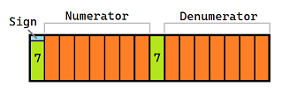

BigRat
readonly struct BigRat
{
private readonly uint[]? p;
//...
}
In short
- Interface system-conform and should fulfill the C# API requirements.
- No stackmachine (VM).
- No static or thread-local members.
- No nested classes.
- No caches or use of
ArrayPool<>.Sharedmemory. - No bad tricks or hacks.
- 16 Kbyte in assembly size only.
- Performance 30% less than
BigRationalbut up to 20 times faster than aBigIntegerbased implemenation.
New concept
Using the processor stack
Uses
stackallocinstead of stackmachine's managed buffers what limits the calculationconly by the C# GC maximum array size.
This is due to the observation that long before the available heap size is reached the performance of the calculations is such as slow that it makes no more parctical sense.
This is because of the exponential relation between calculation speed and memory size of the fractions.No normalization by default.
This is due to the observation that normalization often reduces the bitcount but rarely the effective uint array size, which would speed up subsequent operations.
But of course an explicit normalization viaBigRat.Normalize(BigRat value)is always possible, which enables efficient fine-tuning.
Normalization is perormance critical especially for big fractions and to automate is this difficult especially for C# where we have no custom assign operators.Exceptions instead of NaN or Infinity values
...
Interface
- So far compatible to the interface of System.double
- Additional
-BigRat Normalize(BigRat value)
-BigRat GetNumerator(BigRat value)
-BigRat GetDenominator(BigRat value)
-BigRat Round(BigRat value, uint bits)fast binary rounding - Differences
-BigRat Pi(int digits)<->double.Pi
-BigRat E(int digits)<->double.E - No equivalent:
-double.MinValue-> undefined
-double.MaxValue-> undefined
-double.Epsilon-> 0
-double.NaN-> exeptions
-double.NegativeZero-> undefined
-double.PositiveInfinty-> undefined
-double.NegativeInfinty-> undefined
Interface
docs/images/
